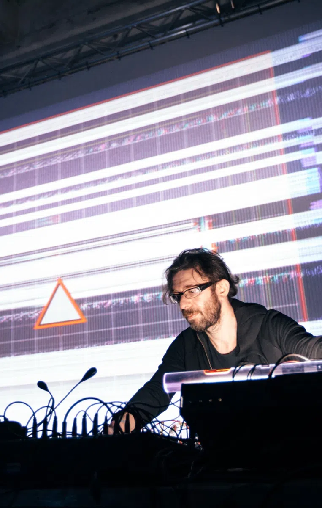

principle1 SOP
01
Первый курс, где Houdini и TouchDesigner изучаются вместе
Параллельное изучение и выбор оптимальной стратегии для разных производственных задач.
sop · interferenceviewer
от 30 342 ₽ · рассрочка 64 / 36 · старт в день оплаты
автор выступал: Berlin Atonal · Mutek Montréal · Ars Electronica · Unsound · Barbicanавтор выступал: Berlin Atonal · Mutek · Ars Electronica
Изучая TouchDesigner, вы одновременно осваиваете Houdini — и наоборот: обе построены на нодах и общих форматах данных.
Процедурная геометрия, VEX, симуляции и офлайн‑рендер: Mantra, Karma, Redshift.
Одна нодовая логика и общие форматы: геометрия, анимация и каналы переходят из одной программы в другую.
Композитинг, CHOP‑сигналы, аудиореактивность, GLSL и вывод на экраны в реальном времени.
Параллельное изучение и выбор оптимальной стратегии для разных производственных задач.
Вы научитесь самостоятельно находить решения: глубокое понимание внутренней логики и обработки данных.
Быстрое погружение в практические задачи. Мы учим мыслить нестандартно и находить свои пути решения.
Motion designers/01 Media artists/02
3D artists/03 VR / XR producers/04
Interactive developers/05 Musicians/06
VJs/07 Video engineers/08

3D- и AV‑художник · 22+ года в компьютерной графике · 20 лет преподавания
Система визуализации инфографики для Kommersant TV; видеомэппинг с SilaSveta, Stereotaktik, Raduga Design.Инфографика для Kommersant TV; видеомэппинг с SilaSveta, Stereotaktik.
Студия генеративного дизайна Licht.Pfad.
Сотрудничество с WhiteVoid; AV‑перформансы с Dasha Rush и Robert Lippok.WhiteVoid; AV‑перформансы с Dasha Rush.
Театральные проекты с Максимом Диденко, медиасерверы для спектаклей.
Killer Tank, Pilot TV, студия «Классика»; Trixter Film и Scanline: TD по pipeline, Character Animation, Cloth Simulation, R&D VFX.
Автоматизированная система визуализации инфографики для Kommersant TV. Видеомэппинг с SilaSveta, Stereotaktik, Invisible, Raduga Design.
Основал студию генеративного дизайна Licht.Pfad.
Сотрудничество с WhiteVoid. Аудиовизуальные перформансы в партнёрстве с Dasha Rush и Robert Lippok.
Театральные проекты с Максимом Диденко, в том числе медиасерверы для спектаклей.
Berlin Atonal, Mutek Montréal, Ars Electronica Linz, Unsound Kraków, Raster‑Noton · Berghain, Barbican London, Resonance Tokyo, Mira Barcelona, L.E.V. Festival, Fête des Lumières Lyon.
фестивали и площадки
Самообучение: старт в день оплаты, уроки открываются по одному в неделю, есть общий чат студентов.Старт в день оплаты, урок в неделю, чат студентов.
предзаписанные видеоуроки
два модуля: База 01–11 и 3D 12–25
новый урок открывается каждую неделю
урок — от 0,9 до 4,7 ч

Программа — это сеть. Выберите ноду, чтобы открыть параметры урока: задачу и навыки.Раскройте урок, чтобы увидеть задачу и навыки.
3D‑сцены, реалтайм-композитинг, логика и UI воспроизведения, аудиореактивная анимация.
Атрибуты и циклы, VEX и GLSL, рендер в TD, Mantra, Karma и Redshift, Replicator, Kinect, симуляции.
Тринадцать тем курса, скоммутированные с семействами операторов: где живёт каждая тема — в геометрии, пикселях, сигналах, данных или контейнерах.13 тем × 6 семейств операторов.
Шесть направлений, где применяются навыки из курса, — от генеративного арта до медиасерверов.
27 работ — домашние и финальные проекты студентов курсов Hou2Touch.
Студенты курсов и воркшопов Станислава из Москвы, Стамбула, Тбилиси, Эссена, Гонконга, Катовице и Милана.
Все тарифы — самообучение: уроки открываются по одному в неделю, есть общий чат студентов. Рассрочка 64 / 36.
38 900 ₽ · рассрочка 19 419 + 10 923 ₽
79 600 ₽ · рассрочка 39 736 + 22 352 ₽
на 10 920 ₽ дешевле «Базы» и «3D» по отдельности
54 700 ₽ · рассрочка 27 306 + 15 360 ₽
Не нашли ответ — напишите в Telegram.
Да. Хотя упор сделан на моушн‑дизайн, Hou2Touch рассчитан на всех, кто хочет расширить профессиональные возможности с TouchDesigner и Houdini. Уровень — начальный и средний.
Да: 64 % при записи и 36 % — через 30 дней для «Базы» или через 45 дней для «База + 3D» и «3D». Новый урок открывается каждую неделю.
Условия — в лицензионном договоре. Вопросы — в Telegram @prcdrl или на hello@hou2touch.com.
Уроки записаны в Houdini 19 и TouchDesigner 2022.
В уроке 01 разбираются лицензии Houdini и TouchDesigner, включая бесплатные Houdini Apprentice и TouchDesigner Non‑Commercial; в уроке 02 показано, как обойти их ограничения на экспорт геометрии и разрешение вывода.
На русском. Интерфейс программ и имена операторов — английские, как в самих Houdini и TouchDesigner.
Да — без практики TouchDesigner и Houdini не освоить. Новый урок открывается каждую неделю и состоит из нескольких видео; домашние задания для самостоятельной практики есть в 21 уроке из 25. Закладывайте несколько часов практики в неделю.
Порядок по программам: Extreme I Extreme II GLSL. Hou2Touch — отдельный путь с нуля.
Концепция, рабочий процесс и инструменты процедурного моделирования и анимации — чтобы делать 3D‑графику для любых задач.
около 46 ч видео · от 30 342 ₽
Для медиахудожников, VJ и музыкантов: 3D‑графика, звук, синхронизация с музыкальными программами и свои интерфейсы.
7,5 ч видео · 13 990 ₽
Продолжение Extreme I — коммерческие задачи: моушн‑дизайн, интерфейсы инсталляций и презентаций, управление светом и лазерами.
10 ч видео · 13 990 ₽
Язык GLSL в TouchDesigner: пайплайн рендеринга, техники рендера, geometry‑шейдеры и GLSL в 2D.
11,5 ч видео · 19 990 ₽
пакет Extreme I + II — 17 500 ₽ вместо 27 980 ₽ все курсы Hou2Touch